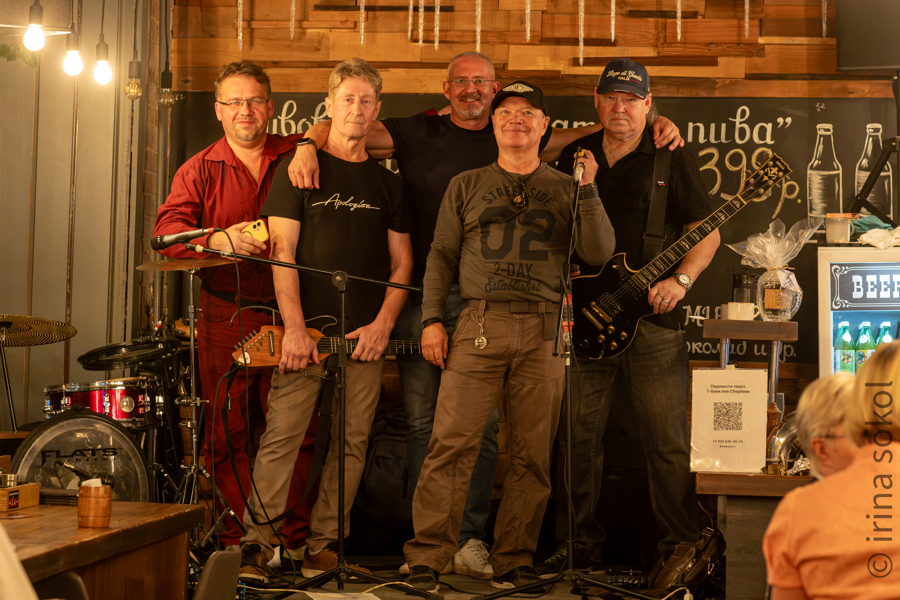
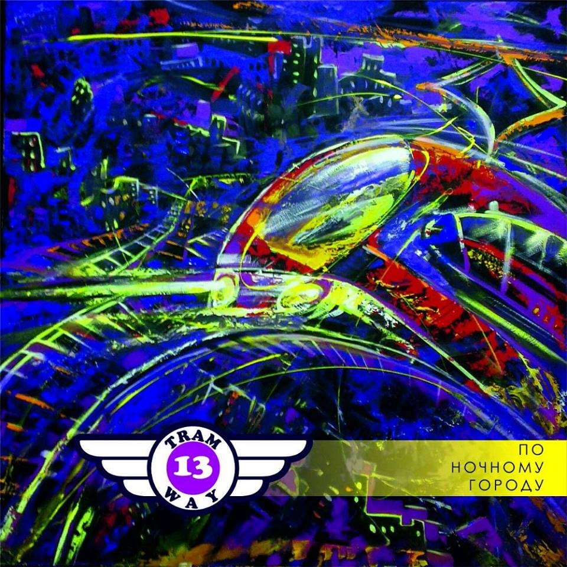
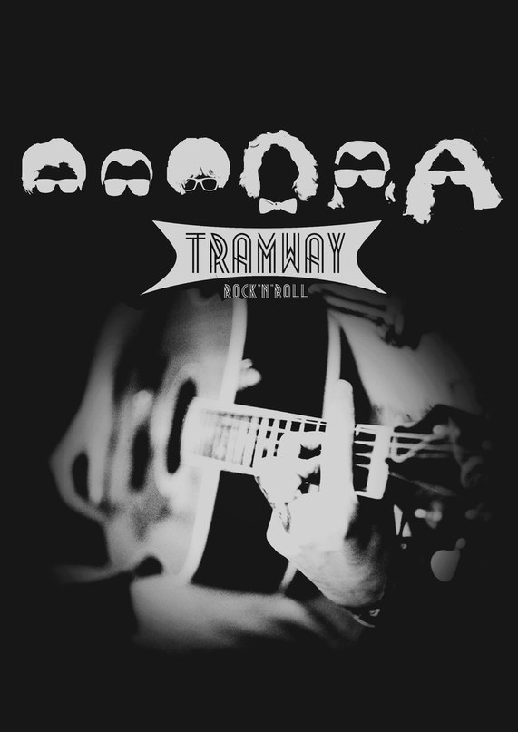

трамваи — люди железные, трамваи — люди устойчивые, даже если не трезвые.
TRAMWAY — рок-группа из Челябинска, которая играет так же, как ходит городской трамвай: размеренно, упрямо и без остановок по требованию. В основе — гитарный рок с блюзовым нервом и текстами, в которых больше правды, чем пафоса.
Группа существует для тех, кто слушает музыку не в наушниках по дороге на работу, а стоя вплотную к колонке на живом концерте.


Альбом о городе, который не спит, и о трамвае, который всё равно идёт по расписанию — сквозь ночь, неон и мокрый асфальт.
